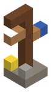
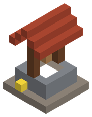

Estructuras y ciudades
Aldeas, campamentos, torres y ruinas que el mundo genera según el bioma. Muchas pertenecen a una facción, que las habita y las defiende.
Ciudades amuralladas. Cada celda de unos 2 km de llanura, desierto o nieve puede tener una ciudad: muralla, plaza con cuatro mostradores de oficio, herrería, posada, templo, torre del globo y guardias que protegen a quien no es un forajido. Los bastiones de las facciones hostiles son fortalezas que los clanes pueden conquistar (ver Clanes y asedios).
 Torre de vigía de los Exploradores
Torre de vigía de los Exploradores
Poste de caminoPlaya, Llanura, Bosque, Pantano, Montaña, Tierras nevadas, Sabana, Desierto, Selva5 × 9 × 3 bloques · Exploradores
PozoPlaya, Llanura, Bosque, Pantano, Montaña, Tierras nevadas, Sabana, Desierto, Selva7 × 11 × 7 bloquesPuesto de guardiaLlanura, Desierto, Tierras nevadas1 × 1 × 1 bloques · City guards
Guarnición de bandidos del bastiónLlanura, Bosque, Pantano, Montaña, Tierras nevadas, Sabana, Desierto, Selva, Playa1 × 1 × 1 bloques · Bandidos
Guarnición de cultistas del bastiónLlanura, Bosque, Pantano, Montaña, Tierras nevadas, Sabana, Desierto, Selva, Playa1 × 1 × 1 bloques · Cultistas de la Sangre de Hierro